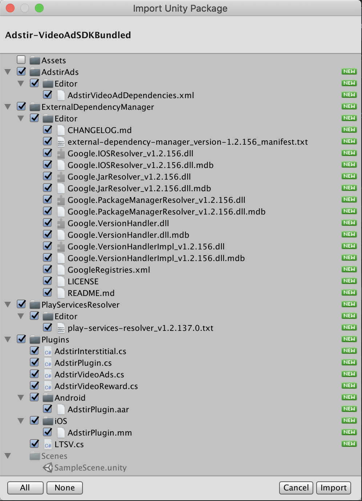
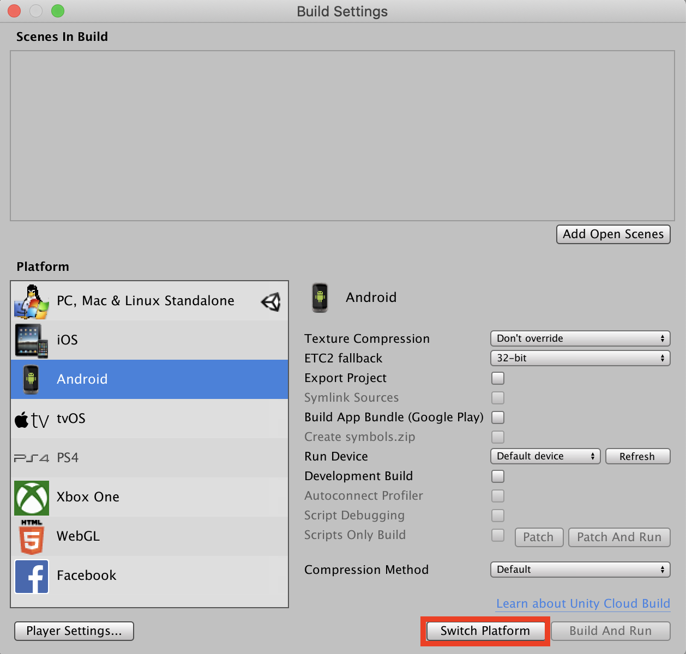
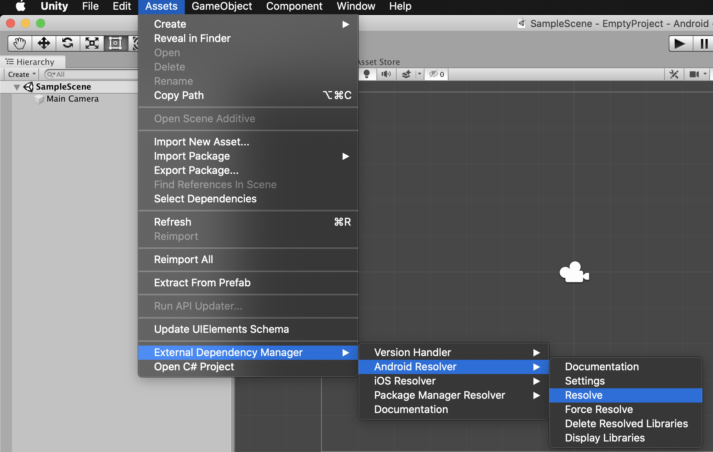

初期設定¶
v2.15.0以前のUnityプラグインからアップデートされる皆様へ
v2.15.0からUnityプラグインのファイル構成が変わっております。以前のバージョンからアップデートされる場合は、こちらを参考に旧プラグインに含まれるファイルを削除してください。
Unityプラグインの入手¶
管理画面にログインして、対象の枠の「タグ/SDK」を選択してください。
「SDKダウンロード」より「adstir SDK (Unityプラグイン)」をダウンロードしてください。
動画リワード広告または全画面インタースティシャル広告をご利用の場合は、「動画SDK (Unityプラグイン)」をダウンロードしてください。
Unityプラグインのインポート¶
組み込みたいプロジェクトを開き、[Assets] > [Import Package] > [Custom Package] より、Unityプラグインを選択します。
すべてのファイルのチェックボックスがオンになっていることを確認して、[Import] をクリックします。

SDKの追加¶
本プラグインには、Play Services Resolverが同梱されています。
Play Services Resolverを使用して、iOS/AndroidのSDKをプロジェクトに追加します。
Android¶
[File] > [Build Settings...] から設定画面を開き、「Platform」を「Android」に設定します。

[Assets] > [External Dependency Manager] > [Android Resolver] > [Resolve] を選択し、SDKを追加します。

iOS¶
iOSのSDKは、ビルド時にCocoaPodsによって追加されます。
SDKを追加する特別な手順はありません。
info.plistの更新¶
iOS 14以降でSKAdNetworkを利用するために、Info.plistにSKAdNetworkItemsを設定する必要があります。
こちらから最新のSKAdNetworkItemsを取得し、Assets/Adstir/Editor/info.plistのSKAdNetworkItemsを更新してください。